Page flip
Prototype on the paper notebook design, version 3
When the day changes, the ruled part of the sheet now turns like a real loose leaf page on its rings, instead of sliding 18 px. The new day is already in place underneath, so nothing waits for the motion. The header, the arrows and the date stamp stay still, and the washi tape is pressed down once, as before. No new text is added anywhere.
Open the prototypeWhat to try
- Press › and ‹ to turn one page each way. Tick a task or start typing straight after a press: the new day takes it at once.
- Use the date stamp, or the "2 days later", "9 days later" and "4 days earlier" buttons, to feel a riffle of 2 or 3 pages. Then press Về hôm nay from far away.
- Press "5 quick presses on ›", or click › as fast as you can. Each press ends the running turn and starts a fresh one, and nothing plays on after you stop.
- Hold Enter on an arrow: the days run on with no flip until you let go.
- Tick "Reduce motion" to see what owners with that system setting get: the day just changes. "Slow motion" and "Inspect one frame" are there so you can study the turn.
- Try the browser Back and Forward buttons. The direction follows the date, not the history.
The turn, frame by frame
One page forward (a later day), 450 ms
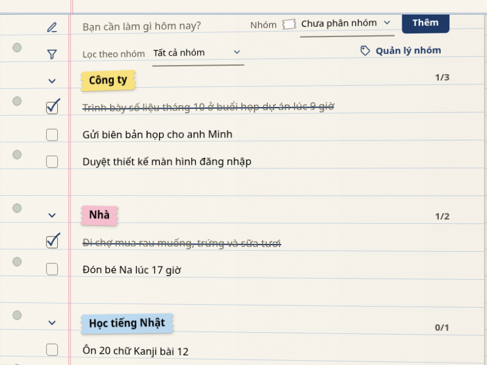
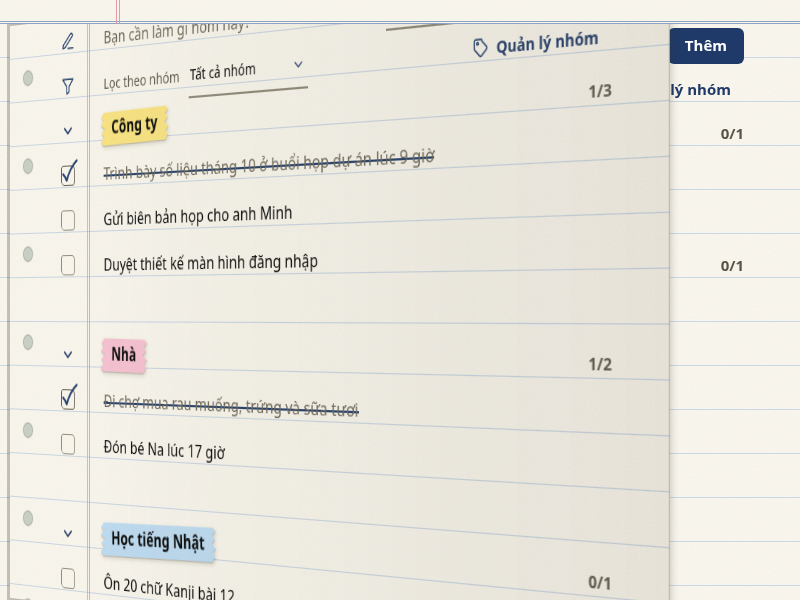
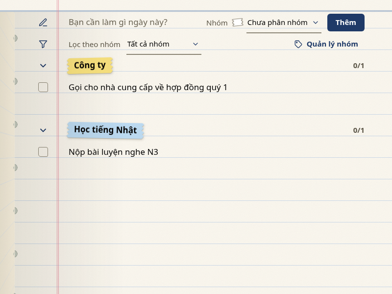
One page back (an earlier day), 450 ms
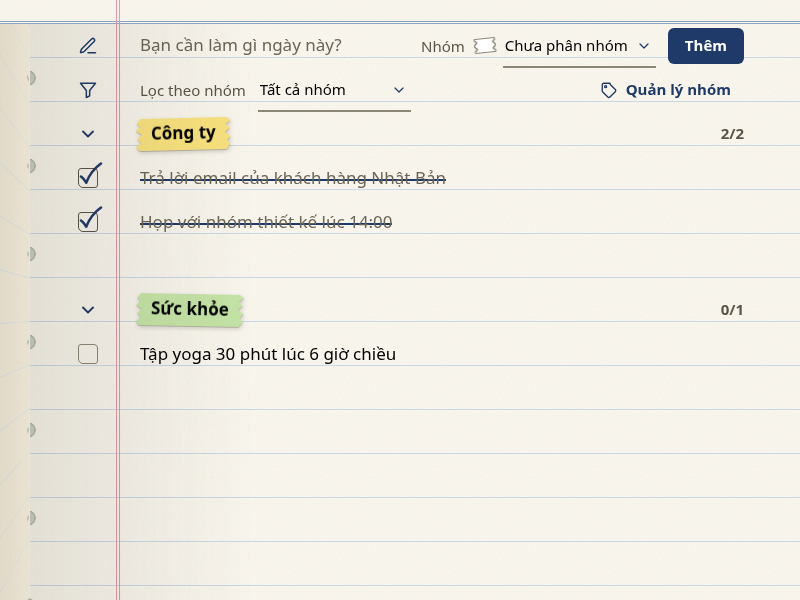
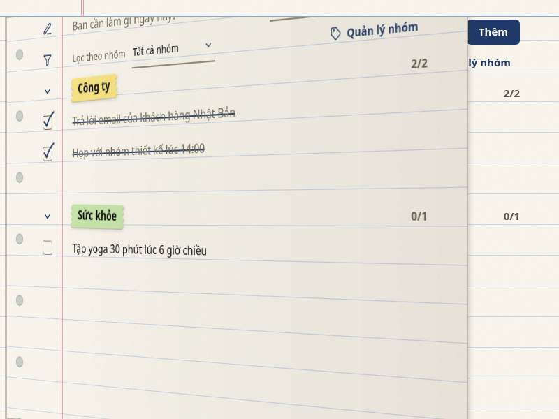
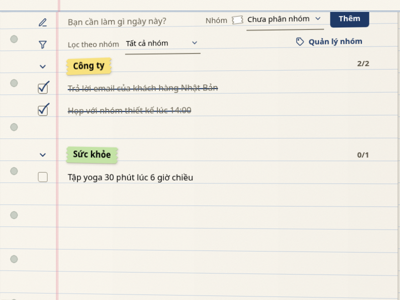
Riffle of 3 (a jump of 3 days or more), 700 ms
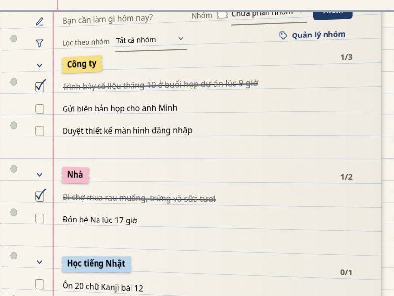
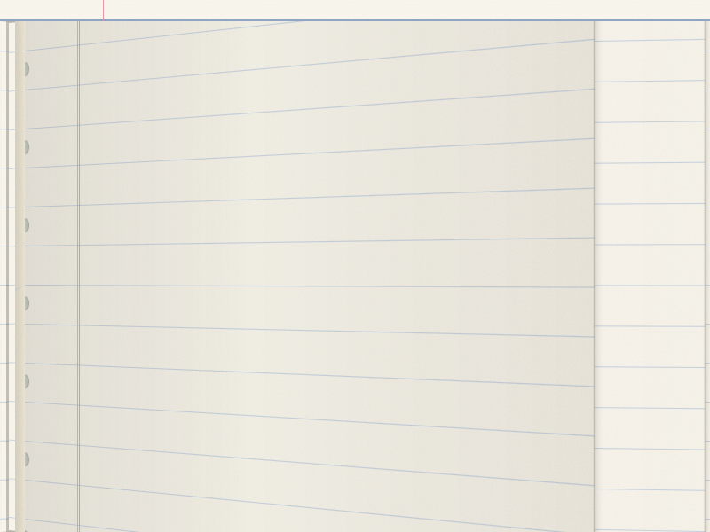
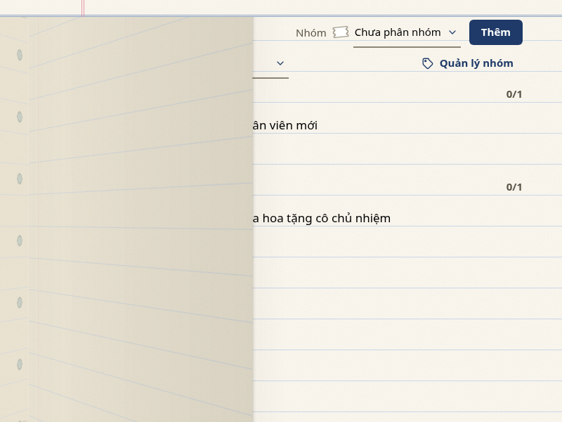
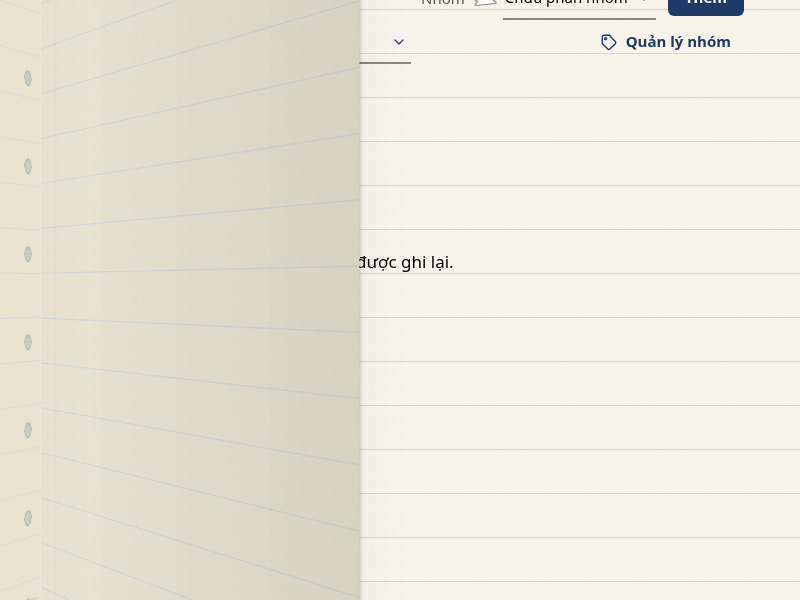
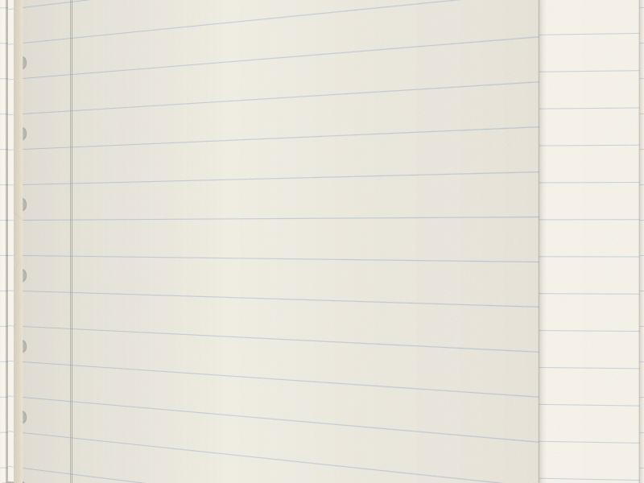
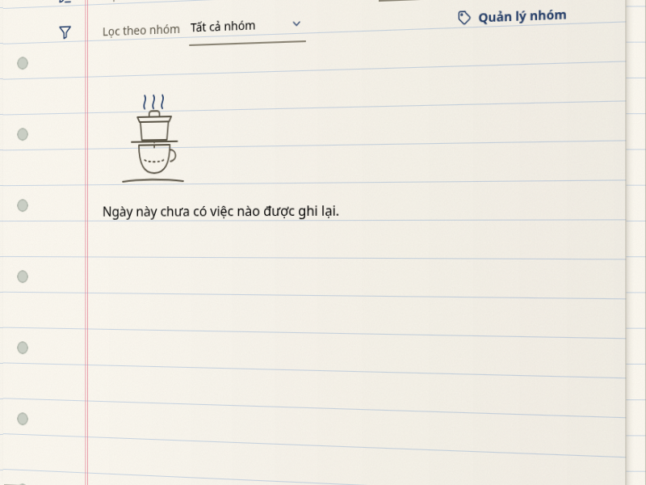
Key design decisions
- The leaf turns on the punched holes, the way a loose leaf page turns on its rings, and lifts towards you with perspective. Its free edge grows a little as it rises, then narrows to a line at the holes. The leaf stays inside the sheet, so the part that would pass over the rings onto the desk is cut off at the sheet edge.
- Because the leaf cannot leave the sheet (R13), its back cannot be seen lying on the left. Instead, from half way on, the text fades into the plain darker back of the paper while a shade grows towards the free edge. It reads as the page turning away from the light.
- Going back in time plays the same motion in reverse: a leaf of the earlier day lands from the rings onto the page. The real earlier day is already underneath from the first frame (R10), so the landing leaf matches it exactly and disappears without a jump.
- In a riffle, the page with words is always on top: it leaves first when going forward and lands last when going back. The pages in between are blank ruled paper, so no in between day is ever shown.
- Only the visible part of the sheet body becomes a leaf, so a day with 200 tasks costs no more than a short one. Only transform and opacity move.
- The leaf is a picture: hidden from screen readers, not reachable by Tab, and clicks pass through it to the new day.
- The prototype uses a small inline script, unlike earlier static prototypes, because motion has to be felt. The control slip above the sheet (or in the left margin on wide screens) is a prototype aid and not part of the app.
Files
Flows and the state inventory are in flows.md, the new tokens and classes in design-system.md (section "Page flip"), and the review notes in critique.md.
- Settled: desktop, phone, desktop dark, phone dark
- Forward at 225 ms: desktop, phone, 360 px, desktop dark, phone dark
- Back at 225 ms: desktop, phone, desktop dark, phone dark
- Riffle of 3 at 350 ms: desktop, phone, desktop dark, phone dark
- Reduced motion: desktop, phone